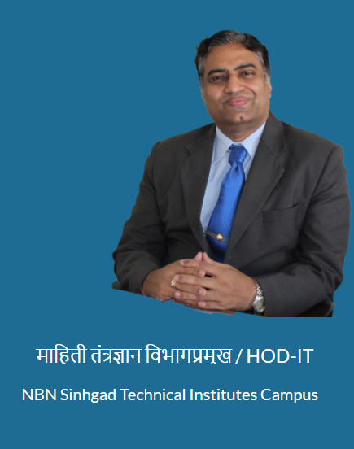

250+ Mindful Consultations | 150+ Academic Tools | 100+ Mock Exams & Quizzes

Discover yourself. Build a growth mindset.
Let us practice to kill the fear of exams.
What to do now?
Mental health resources and counselling.
Schedules, formats, and skill development activities.
Concepts better understood through animation.
Introductory concepts before starting detailed study.
The subject from the AI point of view
Independent study pathways.
Interactive quizzes and mock tests.
Streamline your skills for placement.
Research methodology, IPR and Patents.
Be calm. Be with the greats to be great.
localStorage) — never shared anywhere else.